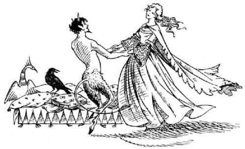
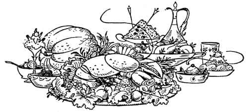
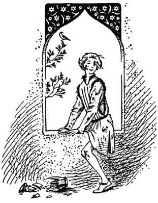

Prens Corin
“Sevgili kardeşim ve en güzel kalpli bayan” dedi Kral Edmund, “şimdi cesur olmalısın. Çünkü küçümsenecek bir tehlike değil bu.”
“Nedir, Edmund?” diye sordu Kraliçe.
“Şu” dedi Edmund. “Tashbaan’ı terk etmemiz kolay olmayacak. Prens seninle evleneceğini umduğu sürece, bizler değerli konuklardık. Fakat Aslan’ın yelesi aşkına, senin düpedüz reddettiğini öğrenir öğrenmez, durumumuz mahkûmlarınkinden daha iyi olmayacak.”
Cücelerden biri hafifçe bir ıslık çaldı.
“Sizi uyarmıştım Majesteleri, uyarmıştım” dedi Kuzgun Sallowpad. “Girerken han kapısı, çıkarken iğne yurdusu, demiş sepetteki ıstakoz!”
“Bu sabah Prens’le beraberdim” diye devam etti Edmund. İsteklerinin yerine gelmemesine biraz (fazlası zarar) alınmış. Senin uzun süren ertelemelerinden ve kararsız cevaplarından rahatsızlık duyuyor. Bu sabah senin aklındakini öğrenmek için çok ısrar etti. Ben, kadınların hayalleri üstüne hafif ve sıradan şakalarla bu sorusunu – aynı zamanda onun umutlarını azaltmak amacıyla – savuşturdum ve aşkının soğukça karşılanabileceğini ima ettim. Öfkesi ve tehlikeli tavırları arttı. Hâlâ nezaket gösterisinin maskesi altında olmasına karşın, konuştuğu her sözcükte bir tür tehdit vardı.”
“Evet” dedi Tumnus, “Ben de dün akşam Başvezir’le yemek yerken her şey aynen böyleydi. Bana Tashbaan’ı sevip sevmediğimi sordu. Ve ben (her taşından nefret ettiğimi elbette söyleyemezdim, ama yalan da söyleyemeyeceğim için) yaz ortası yaklaştıkça kalbimin Narnia’nın serin ormanlarını ve ıslak yamaçlarını çektiğini söyledim. Onaylamadığı anlamına gelen bir gülümsemeyle dedi ki, ‘Seni yeniden orada dans etmekten alıkoyacak hiçbir şey yok küçük keçi ayaklı; karşılık olarak Prens’imize bir gelin bıraktığınız sürece.’”
“Beni zorla karısı mı yapacağını söylemek istiyorsun?” diye hayretle bağırdı Susan.
“Ben de bundan korkuyorum Susan” dedi Edmund. “Karısı, hatta daha da kötüsü; kölesi…”
“Fakat bunu nasıl yapabilir? Tisroc, kardeşimiz Ulu Kral’ın böyle bir hakarete katlanacağını mı düşünüyor?”
“Sör” dedi Peridan, Kral’a. “O kadar akılsız olamazlar. Narnia’da kılıçların ve okların olmadığını mı düşünüyorlar?”
“Ne yazık ki” dedi Edmund, “Tisroc’un Narnia’dan çok da korkmadığını tahmin ediyorum. Biz küçük bir ülkeyiz. Büyük imparatorluğa komşu olan küçük ülkeler, her zaman büyük imparatorluğun yöneticisinden nefret etmişlerdir. Çünkü o, onları silip süpürmek ister. Kardeşim, Tisroc, Prens’in senin âşığın olarak Cair Paravel’e gelmesine izin verdiği ilk günden bu yana bence bir bahane arıyordu. Büyük bir olasılıkla Narnia ve Archenland’ı bir lokmada yutmak istiyor.”
“Bırak denesin” dedi ikinci cüce. “Denizde en az onun kadar güçlüyüz. Eğer karadan saldırırsa, çölü geçmek zorunda.”
“Doğru dostum” dedi Edmund. “Fakat çöl, savunma için güvenli mi? Sallowpad ne diyor?”
“Bu çölü iyi bilirim” dedi Kuzgun. “Çünkü gençliğimde üzerinde uçmadığım yer kalmadı.” (Burada Shasta’nın kulaklarını kabarttığına emin olabilirsiniz.) Eğer Tisroc büyük vaha yolunu izlerse, Archenland’a büyük bir ordu götüremeyeceği kesin. Bir günlük yürüyüş sonunda vahaya ulaşmaları mümkün olmasına karşın, oradaki su kaynakları bütün o askerlerin ve hayvanlarının susuzluğunu gidermeye yetmez. Ancak bir başka yol daha var.”
Shasta daha dikkatli dinliyordu şimdi.
“Bu yolu izlemek isteyen biri” dedi Kuzgun, “Antik Kral Mezarları’ndan yola çıkmalı ve Pire Dağı’nın ikiz tepelerini tam karşısına alıp kuzeybatıya doğru gitmeli. Ve böylece bir gün ya da biraz daha fazla bir süre yol aldıktan sonra, taşlık bir vadinin girişine ulaşılır. Bu vadi öylesine dardır ki, insan iki yüz metre yakınına bin kez gelse, hâlâ vadinin orada olduğunu anlamayabilir. Bu vadinin tabanına baktığınızda ne ot, ne su ne de yararlı bir şey görebilirsiniz. Fakat aşağıya doğru devam edilirse bir nehre ulaşılır ve nehrin kıyısını izleyerek ta Archenland’a kadar gidilebilir.”
“Calormenliler bu batı yolunu biliyorlar mı?” diye sordu Kraliçe.
“Dostlar, dostlar” dedi Edmund, “bu konuşmaların yararı ne? Eğer savaş çıkarsa Calormen’in mi yoksa Narnia’nın mı kazanacağını sormuyoruz. Kraliçe’nin onurunu korumak ve kendimizi bu uğursuz şehirden canlı olarak çıkarmak istiyoruz. Çünkü kardeşim Ulu Kral Peter, Tisroc’u defalarca yenmiş olmasına karşın, bu kez o bizi kurtarma fırsatı yakalamadan çok önce gırtlaklarımız kesilmiş ve onurlu Kraliçemiz, Prens’in karısı ya da büyük bir olasılıkla, kölesi olmuş olur.”
“Silahlarımız var, Kral’ım” dedi birinci cüce. “Ve bu ev savunmaya oldukça elverişli.”
“Ona kalırsa,” dedi Kral, “kapıda canlarımızı pahalıya satacağımızdan hiç şüphem yok. Kraliçe’ye ölülerimizin üzerine basmadan ulaşamazlar. Ancak doğruyu söylemek gerekirse, bizler sadece kapandaki fareler gibiyiz.”
“Çok doğru” diye gakladı Kuzgun. “Evlerdeki böylesi direnişlerden iyi hikâyeler çıkar ama herhangi bir sonuç çıkmaz. Birkaç defa geri püskürtüldükten sonra, düşman her zaman evi ateşe verir.”
“Bütün bunlar benim yüzümden” dedi Susan gözyaşlarına boğularak. “Ah, keşke Cair Paravel’i hiç terk etmeseydim. Son mutlu günümüz, Calormen’den o elçiler gelmeden önceki gündü. Köstebekler bizim için meyve ağaçları dikiyorlardı . . . oh . . . oh.” Ve yüzünü ellerine gömerek hıçkırmaya başladı.
“Cesaret, Su, cesaret” dedi Edmund. “Hatırlar mısın – Ne o? Bir derdin mi var Tumnus efendi?” O sırada Faun, sanki başına hâkim olamıyormuş gibi elleriyle iki boynuzunu tutmuş, içinde bir sızı varmış gibi ileri geri debeleniyordu.
“Konuşma benimle, konuşma benimle” dedi Tumnus. “Düşünüyorum. Düşünüyorum da ondan zorla nefes alabiliyorum. Bekle, bekle, bekle.”
Bir an için şaşkınlığın verdiği bir sessizlik oldu, sonra Faun başını kaldırdı, derin bir nefes aldı, alnındaki terleri sildi ve;
“Tek zorluk, görülmeden ve durdurulmadan – biraz da erzakla – gemimize binebilmek…”
“Evet” dedi cüce kuru bir sesle. “Dilencinin ata binmedeki tek zorluğunun, bir atı olmaması gibi.”
“Bekle, bekle” dedi Bay Tumnus sabırsızca. “Gerekli olan tek şey gemiye ulaşmak. Oraya eşya götürmek için bir bahane bulmalıyız.”
“Evet” dedi Kral Edmund şüpheyle.
“Öyleyse” dedi Faun, “Prens, bizim kalyonumuz Splendor Hyaline’ın güvertesinde verilecek büyük bir ziyafete davet edilse ne olur? Davetiye, Prens’e umut vermeli, ancak Kraliçe’nin onurunu zedelemeyecek bir biçimde zarifçe yazılmalı.”
“Bu çok iyi bir fikir, Sör” diye gakladı Kuzgun.
“Ve sonra” diye devam etti Tumnus heyecanla, “herkes, dostlarımız için hazırlık yapmak üzere gün boyunca gemiye gidip gelmemizi normal karşılayacak. Bazılarımız pazara gitsin. Sanki ziyafet veriyormuşuz gibi, cebimizdeki her kuruşu meyvecilerde, şekerlemecilerde, şarapçılarda harcasın. Ayrıca sihirbazlar, hokkabazlar, dansöz kızlar ve flütçülerin yarın gece gemiye gelmesini emredelim.”
“Anladım, anladım” dedi Kral Edmund, ellerini ovuşturarak.
“Sonra” dedi Tumnus, “bu gece hepimiz gemide oluruz. Ve karanlık basar basmaz—”
“Çek kürekleri, bas yelkenleri!” dedi Kral.
“Denize!” diye bağırdı Tumnus, havaya sıçrayıp dans etmeye başlayarak.
“Ve rotamızı kuzeye çeviririz” dedi birinci cüce.
“Eve dönüyoruz! Narnia ve kuzey için hurra!” dedi diğeri.
“Böylelikle Prens ertesi sabah uyanınca kuşların yuvadan uçtuğunu görecek!” dedi Peridan, ellerini çırparak.
“Oh Tumnus Efendi, sevgili Tumnus Efendi” dedi Kraliçe, onun ellerini tutup beraberce dans ederek salınırken. “Hepimizi kurtardın.”

“Prens bizi takip edecektir” dedi Shasta’nın adını bilmediği bir başka lord.
“En az korktuğum şey bu” dedi Edmund. “Nehirdeki bütün gemileri gördüm. Orada ne bir yelkenli savaş gemisi ne de hızlı kadırgaları var. Keşke bizi takip etse! Çünkü Splendor Hyaline – eğer bizi yakalarsa – arkamızdan gönderilecek her tekneyi batırabilir.
“Sör” dedi Kuzgun. “Yedi gündür karar vermeye çalışmamıza karşın Faun’unkinden daha iyi bir plan yapamadık. Ve şimdi bizim, kuşların dediği gibi, yumurtlamadan önce yuvamızı yapmamız gerekiyor. Bu da demek oluyor ki, yiyeceklerimizi alıp hemen işimize bakalım.”
Bundan sonra herkes ayağa kalktı, kapılar açıldı, lordlar ve yaratıklar, Kral ve Kraliçe’nin ilk önce dışarı çıkması için kenarda dikildiler. Shasta, ne yapması gerektiğini merak ediyordu ama Bay Tumnus, “Yatın orada Majesteleri, az sonra zatınıza bir ziyafet sunacağım. Gemiye binmek için herkes hazır olana kadar hareket etmenize gerek yok” dedi. Shasta başını yeniden yastığa koydu, biraz sonra odada yalnızdı.
“Bu çok kötü” diye düşündü Shasta. Narnialılara bütün gerçeği anlatıp yardım etmelerini istemek aklına gelmemişti. Arsheesh gibi cimri ve zor bir adam tarafından büyütüldüğü için, yetişkinlere mümkün olduğunca hiçbir şey söylememe gibi kötü bir alışkanlığı vardı; yapmayı istediği şeyi ya engelleyeceklerini ya da bozacaklarını düşünüyordu. Kral, Narnialı ve konuşan hayvanlar oldukları için iki ata dostça davransa bile, Calormenli olduğu için Aravis’ten nefret edebilir; onu köle olarak satabilir ya da babasına geri gönderebilirdi. Kendisine gelince, “En azından şimdilik ona Prens Corin olmadığımı söyleyemem” diye düşünüyordu. “Bütün planlarını öğrendim. Kendilerinden biri olmadığımı öğrenirlerse beni bu evden sağ çıkarmazlar. Onları Tisroc’a ihbar edeceğimden korkarlar. Beni öldürürler. Bu arada gerçek Corin oraya çıkarsa, her şey berbat olur ve beni kesinlikle öldürürler!”
Görüyorsunuz ki Shasta’nın, soylu ve özgür doğmuş insanların nasıl davranacağı hakkında hiçbir bilgisi yoktu; “Ne yapacağım? Ne yapacağım?” deyip durdu kendi kendine. “Ne – eyvah, keçi kılıklı ufak yaratık yine geliyor.”
Faun, ellerinde neredeyse kendisi kadar büyük bir tepsiyle, dans eder gibi, koşar adımlarla içeri girdi. Tepsiyi Shasta’nın sedirinin yanındaki kakmalı bir masaya koydu ve keçi ayaklarıyla yerdeki halının üzerine bağdaş kurup oturdu.
“Şimdi Prensçik” dedi. “İyice karnını doyur. Bu senin Tashbaan’daki son yemeğin.”
Calormen geleneklerine göre yapılmış enfes bir yemekti. Sizi bilemem, ama Shasta sevmişti. Tepside ıstakoz, salata, mantarlı ve bademli çulluk dolması, tavuk ciğeri, pirinç, kuşüzümü ve fıstıkla yapılmış zengin karışımlı bir yemek ve buz gibi karpuz, siyah üzüm, dut şerbeti gibi her türlü yiyecek-içecek; küçük bir sürahide de sarı renkli, bir tür beyaz şarap vardı.

Shasta yemeğini yerken, güneş çarpması nedeniyle onun bilincinin tam açık olmadığını düşünen sevimli küçük Faun, hep birlikte eve döndüklerinde geçirecekleri güzel günlerden söz etti. Onun cana yakın ihtiyar babası Archenland Kralı Lune’un yaşadığı geçidin yamaçlarında bulunan küçük kalesi üstüne konuşmasını sürdürdü. “Ve unutma ki” dedi Bay Tumnus, “doğum gününde ilk kez bir savaş atına ve bir zırha sahip olacaksın; bunun için söz verildi sana. İşte o zaman majesteleri at üstünde mızrakla saldırıp kavga etmeyi öğrenecek. Ve birkaç yıl sonra, her şey yolunda giderse Kral Peter, seni Cair Paravel’de şövalye yapacağına dair soylu babana söz verdi. Bu arada, Narnia ve Archenland arasında dağların boğazlarından geçilerek birçok ziyaretler yapılacak. Kuşkusuz yaz festivali için gelip, bir hafta boyunca benimle kalacağına dair verdiğin sözü hatırlıyorsundur. Ormanın derinliklerinde ateşler yakılacak ve Faunlarla su perileri bütün gece dans edecekler. Kim bilir? – Aslan’ı da görürüz belki!”
Yemek bittiğinde Faun, Shasta’ya olduğu yerde sakince kalmasını söyledi. “Ve azıcık da uyursan zararı olmaz” diye ekledi. “Gemiye binmeden çok önce uyandırırım seni. Sonra, eve! Narnia ve kuzeye!”
Shasta, yemeğinden ve Tumnus’un ona tüm anlattıklarından öyle hoşlanmıştı ki, yalnız kaldığında düşünceleri değişmeye başladı. Şimdi, gemiyle Narnia’ya götürülmeyi, gerçek Prens Corin’in iş işten geçene kadar ortaya çıkmamasını umuyordu. Korkarım, gerçek Corin Tashbaan’da bırakılırsa, başına gelebilecekleri hiç düşünmüyordu. Mezarlarda bekleyen Aravis ve Bree’yi merak etmiyor değildi, fakat “Elimden ne gelir ki?” diyordu kendi kendine, “Nasıl olsa, Aravis benimle seyahat edemeyecek kadar soylu olduğunu düşünüyor, öyleyse yalnız başına gitsin.” Aynı zamanda çölde bin bir güçlükle yol almaktansa, Narnia’ya deniz yoluyla gitmenin daha güzel olacağını düşünmekten kendini alamıyordu.
Shasta, bütün bunları düşündüğünde; eğer erkenden kalkıp uzun bir yürüyüş yapsaydınız ve heyecanlı bir günün sonunda, iyi bir yemek yiyip, bir arının vızıldayarak ardına kadar açık pencereden içeriye girdiği serin bir odada sedirde uzanıyor olsaydınız, benim sizden de yapmanızı bekleyeceğim şeyi yaptı; uykuya daldı.
Şiddetli bir şangırtıyla uyandı. Sedirden sıçrayarak etrafına bakındı. Odanın görüntüsünden – gölgeler ve ışıklar değişmişti – saatlerce uyumuş olması gerektiğini hemen anladı. Şangırtının nereden geldiğini de gördü: Pencerenin denizliğinde duran pahalı bir porselen vazo, paramparça kırılmış halde yerdeydi. Uyku mahmurluğuyla, dışarıdan pencerenin pervazına yapışmış iki eli gördü. Ellerin kavrayışı gittikçe güçlendi (eklemleri bembeyaz olmuştu) ve sonra bir baş ve bir çift omuz göründü. Bir an sonra pencerede, bir ayağı içerde bir ayağı dışarıda, ata binermiş gibi oturan, Shasta’nın yaşında bir çocuk belirdi.

Shasta, kendi yüzünü aynada hiç görmemişti. Görmüş olsaydı bile diğer çocuğun (sıradan bir günde) aynen kendisine benzediğini düşünmeyebilirdi. Gerçi o haliyle bu çocuk da kimseye benzemiyordu çünkü belki de hiç görmediğiniz morlukta gözleri vardı ve bir dişi eksikti. Ayrıca giysileri (ilk giydiğinde muhteşem olmalıydılar) yırtık ve kirliydi, yüzünde çamur ve kan izleri vardı.
“Sen kimsin?” dedi çocuk fısıltıyla.
“Sen Prens Corin misin?” dedi Shasta.
“Elbette” dedi diğeri. “Ama sen kimsin?”
“Kimse değilim, yani özel biri değilim demek istiyorum” dedi Shasta. “Kral Edmund, beni caddede yakaladı ve seninle karıştırdı. Sanırım birbirimize benziyoruz. Senin içeriye girdiğin yoldan dışarı çıkabilir miyim?”
“Evet, iyi tırmanabiliyorsan” dedi Corin. “Fakat neden acele ediyorsun ki? Birbirimizle karıştırılmaktan biraz eğlence payı çıkarabiliriz bence.”
“Hayır, hayır” dedi Shasta. “Hemen yer değiştirmeliyiz. Bay Tumnus geri gelir de ikimizi burada bulursa kötü olur. Kendimi senin yerine koymak zorunda kaldım. Ve siz bu gece – gizlice – gidiyorsunuz. Bunca zamandır neredeydin?”
“Yoldaki bir çocuk, Kraliçe Susan hakkında kötü bir şaka yaptı” dedi Prens Corin, “ben de onu yumrukladım. Ağlayarak bir eve koştu ve büyük kardeşi çıktı. Büyük kardeşini de dövdüm. Sonra nöbetçi denilen ve mızrakları olan üç yetişkin adamla karşılaşana kadar beni takip ettiler. Nöbetçilerle kavga ettim ve beni dövdüler. Artık hava kararıyordu. Sonra nöbetçiler beni hapse atmak için beraberlerinde götürdüler. O zaman onlara, bir tas şarap isteyip istemediklerini sordum. İçerlerse pek fark etmeyeceğini söylediler. Sonra onları bir şaraphaneye götürdüm, biraz şarap aldım ve oturduk. Sızana kadar içtiler. Oradan uzaklaşmanın tam zamanı olduğunu düşünüyordum; sessizce dışarı çıktım ve – bütün bu dertleri başıma saran – o çocuğu hâlâ dışarıda beklerken buldum. Yeniden dövdüm onu. Bundan sonra bir evin yağmurluğundan çatısına tırmandım ve bu sabah hava ağarana kadar sessizce saklandım. O zamandan beri buraya geri dönmeye çabalıyordum. İçecek bir şeyler var mı?”
“Hayır, ben içtim hepsini” dedi Shasta. “Şimdi bana nasıl geldiğini göster. Kaybedecek bir dakikamız bile yok. Sedire uzanıp uyuyormuş gibi davransan iyi – ama unuttum. Ama bu, bütün o morluklarla yani bu mor gözle işe yaramaz. Ben uzaklaştığımda onlara doğruyu söylesen iyi olur.”
“Onlara ne diyeceğimi sanıyorsun ki?” diye sordu Prens Corin kızgın bir bakışla. “Ayrıca, sen kimsin?”
“Zaman yok” dedi Shasta, çileden çıkmış bir fısıltıyla. “Ben bir Narnialı olduğuma inanıyorum; en azından kuzeyden bir yerden… Ne var ki hayatım boyunca Calormen’de yaşadım. Bree adlı konuşan bir atla çölü geçerek kaçacağız. Şimdi çabuk! Nasıl uzaklaşacağım?”
“Bak” dedi Corin. “Bu pencereden verandanın çatısına atla. Fakat sessizce yapmalısın bunu; ayaklarının ucuyla, yoksa biri seni duyabilir. Sonra sola doğru git ve eğer iyi tırmanabilen birisiysen şu duvarın üzerine çıkabilirsin. Dışarıdaki çöp yığınının üzerine atla ve merhaba sokak!”
Şimdiden eşikte oturmakta olan Shasta, “Teşekkürler” dedi. İki çocuk birbirlerinin yüzüne baktılar ve o anda dost olduklarını anladılar.
“Güle güle” dedi Corin. “Ve bol şanslar. Umarım sağ salim kaçarsın.”
“Hoşça kal” dedi Shasta. “Epey macera yaşamışsın bence.”
“Seninkiyle kıyaslanamaz” dedi Prens. “Şimdi yavaşça atla” diye ekledi Shasta hazırlanırken. “Umarım Archenland’da karşılaşırız. Babam Kral Lune’a git ve benim arkadaşım olduğunu söyle. Dikkat et! Biri geliyor galiba.”